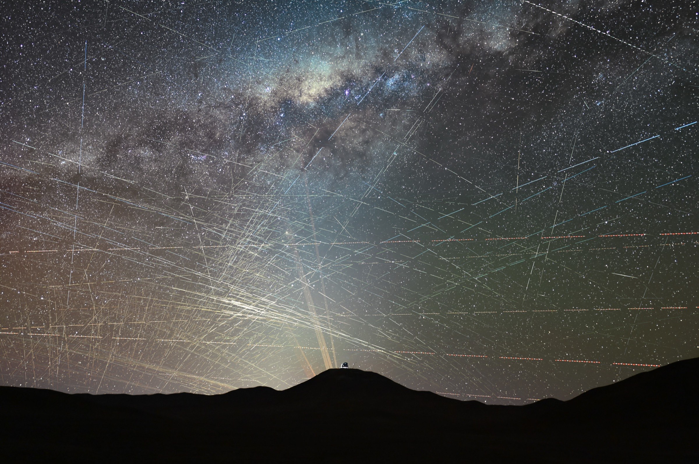

Acervo de edições
EUA aprovam em parte constelação de 1 milhão de satélites da SpaceX, e ESO alerta para impacto na astronomia
A agência de telecomunicações dos Estados Unidos aprovou parcialmente em 25 de novembro de 2026 a rede Starmind, de satélites que funcionariam como centros de dados em órbita; o Observatório Europeu do Sul diz que o número de rastros nas imagens de telescópios passaria do que é possível corrigir.

A Comissão Federal de Comunicações dos Estados Unidos (FCC) autorizou parcialmente, em 25 de novembro de 2026, a SpaceX a implantar a Starmind, uma constelação de 1 milhão de satélites que funcionariam como centros de dados em órbita baixa da Terra. No dia seguinte, o Observatório Europeu do Sul (ESO) divulgou uma nota em que o diretor-geral, Andreas Kaufer, afirma que o projeto, como foi aprovado, teria consequências profundas para a astronomia e mudaria o céu noturno para todo o planeta.
Segundo o documento da FCC, assinado pelo Escritório Espacial da agência, os satélites ficariam em camadas orbitais entre 500 km e 1.002 km de altitude. A licença cobre o uso de rádio só para telemetria e comando de reserva e de emergência; a comunicação principal da rede seria feita por enlaces ópticos entre os satélites. O pedido de dispensa da regra que exige que satélites abaixo de 2.000 km sejam descartados por reentrada na atmosfera foi adiado, por falta de informações. Os satélites previstos acima de 600 km de altitude, a maioria das camadas, só poderão ser lançados depois que a SpaceX apresentar à FCC um pedido de modificação com o plano final de descarte e mitigação de detritos.
A autorização tem prazos: a SpaceX precisa ter o primeiro satélite operando até 25 de novembro de 2033, 10% da constelação até 2035, metade até 2038 e o total até 25 de novembro de 2040. Se não cumprir, a licença perde a validade.
A FCC negou o pedido da Sociedade Astronômica Americana (AAS) para barrar o projeto. No texto, a agência considera que o compromisso da SpaceX de se coordenar com a Fundação Nacional de Ciência (NSF) basta para as preocupações com a astronomia óptica, lembra que suas regras não tratam da proteção desse tipo de observação e diz que o alerta da AAS sobre o calor emitido pelos satélites, que poderia clarear o céu no infravermelho, está fora do escopo da licença.
O ESO baseia seu alerta num estudo do astrônomo Olivier Hainaut, revisado por pares e publicado em 2026 na revista Astronomy & Astrophysics (divulgado pelo ESO em julho). A simulação indica que, com a rede de centros de dados da SpaceX, centenas de satélites ficariam visíveis durante boa parte da noite e, em certos momentos, vários milhares, número parecido com o de estrelas vistas a olho nu em boas condições. Em imagens feitas duas horas após o anoitecer com o Very Large Telescope (VLT), no Chile, apareceriam dezenas de rastros, com perda de até 28% do campo de visão, mesmo supondo satélites fracos demais para serem vistos a olho nu.
Para o ESO, mesmo com satélites individualmente menos brilhantes, o total de rastros passaria do que é possível corrigir. A nota cita ainda ruído de rádio, que afeta a radioastronomia, poluição da atmosfera por lançamentos e reentradas e o risco de colisões em cadeia em órbita baixa. O estudo de julho conclui que, para proteger a astronomia feita do solo, o total de satélites em órbita não deveria passar de 100 mil, todos fracos demais para serem vistos a olho nu.
O ESO enviou contribuição à consulta pública da FCC junto com a Real Sociedade Astronômica do Reino Unido e a União Astronômica Internacional. Kaufer defende mecanismos internacionais para avaliar atividades espaciais cujos efeitos ultrapassam fronteiras nacionais.
Grau de certezaA aprovação, parcial, é fato documentado na decisão oficial da FCC (DA 26-1273): o pedido foi concedido em parte e adiado em parte, e os satélites acima de 600 km ainda dependem de um novo pedido de modificação. Os impactos sobre a astronomia são estimativas de simulação de um estudo revisado por pares, feitas antes da aprovação e para a constelação planejada; a FCC avaliou que os compromissos da SpaceX bastam. Não há garantia de que os 1 milhão de satélites serão lançados: além dos prazos de implantação até 2040, parte da constelação ainda precisa de nova análise da FCC.
Fontes
- ESO — ESO statement on approval of launch of one million space data centres, eso2614 (26/11/2026)
- FCC — SpaceX Orbital Data Center System (Starmind), Memorandum Opinion and Order and Authorization, DA 26-1273 (25/11/2026)
- ESO — "Beyond the limit": one million satellites and mirrors in space pose grave threat to the night sky, eso2607 (01/07/2026)